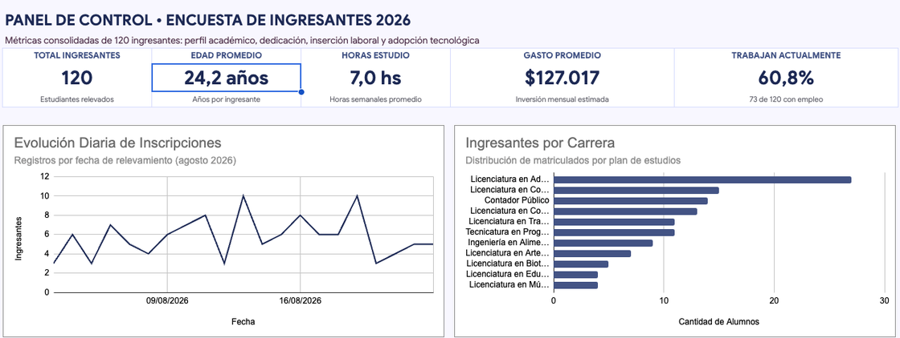

Qué gráfico para qué pregunta
Un gráfico no es un adorno: es una respuesta visual a una pregunta. Antes de tocar el menú, tenés que saber qué querés mostrar. De esa pregunta sale el tipo de gráfico.
| Si la pregunta es... | Usá | Ejemplo del caso |
|---|---|---|
| ¿Cuál es más grande? Comparar categorías | Columnas o barras | Respuestas por carrera |
| ¿Qué parte del total es cada uno? | Torta (pocas partes) | Trabaja Sí y No |
| ¿Cómo cambia en el tiempo? | Líneas | Respuestas por día de la encuesta |
| ¿Hay relación entre dos números? | Dispersión | Horas de celular y horas de estudio |
⚠️ La torta tiene reglas
Una torta solo sirve cuando las partes suman un total y son pocas, no más de cinco. Con once carreras es ilegible: ahí van barras. Y nunca uses el efecto 3D: deforma las proporciones.
Otra regla: no se grafica la tabla de 120 filas, se grafica un resumen. Los gráficos de esta clase salen de tablas chicas que arman tus fórmulas (CONTAR.SI, PROMEDIO.SI), no de los datos crudos.
Armar y personalizar un gráfico
Se selecciona la tabla resumen, incluyendo los encabezados, y se elige Insertar → Gráfico. Sheets propone un tipo; a la derecha se abre el Editor de gráficos, con dos pestañas.
| Pestaña | Qué controla |
|---|---|
| Configuración | El tipo de gráfico, el intervalo de datos, qué columna es el eje X y cuáles son las series, y si la primera fila se usa como encabezado. |
| Personalizar | El estilo: títulos del gráfico y de los ejes, colores de las series, etiquetas de datos, leyenda y tipografía. |

El Editor de gráficos en la pestaña Configuración: tipo de gráfico, intervalo de datos, eje X, series y Usar la fila 1 como encabezados. Con una columna de texto, Sheets agrupa y cuenta solo (Agregar).
Datos que no están juntos
Si las columnas que querés graficar no son vecinas, como la Carrera (columna A) y las Respuestas (columna C) de la tabla CARRERAS, seleccionalas con Ctrl apretado (en Mac, ⌘), o escribilas en el campo Intervalo de datos separadas por coma: A1:A12,C1:C12.
Un gráfico que se mueve con tus datos
El gráfico queda unido a su tabla. Si cambia un número, el gráfico cambia. Y si la tabla depende de una celda (como el selector que armás en la sección del tablero), el gráfico se redibuja cuando cambiás la selección.
Un título que diga algo
El título por defecto (Respuestas por Carrera) describe el gráfico. Uno mejor dice lo que muestra: Administración concentra casi una de cada cuatro respuestas. Un título con la conclusión le ahorra trabajo a quien lo lee. Poné también etiquetas en los ejes y sacá la leyenda si hay una sola serie.
Tres gráficos sobre 8 filas
- Abrí tu archivo Retrato del curso. Creá una hoja
PRACTICA11y copiá en ella las primeras 8 respuestas con todas las columnas calculadas (DATOS!A1:S9) con Pegado especial → Solo valores. Ya trae el departamento en la columnaR. - En
A12:B12escribíUso de IAyRespuestas; enA13:A16los cuatro niveles (Nunca,A veces,Seguido,Todos los días) y enB13=CONTAR.SI($I$2:$I$9;A13), copiada. Controles: 0, 3, 3 y 2. SeleccionáA12:B16e insertá un gráfico de columnas con un título que diga algo y etiquetas de datos. - Seleccioná con
Ctrl(Mac:⌘) las columnasC1:C9(carrera) yK1:K9(gasto) e insertá un gráfico de barras. Tiene que mostrar 8 barras. - Armá una tabla de dos filas con
Trabaja(5) yNo trabaja(3) usandoCONTAR.SIe insertá una torta. Decidí si con dos partes es el gráfico más claro.
Tabla dinámica y control de filtros
La tabla CARRERAS de la clase anterior la armaste a mano, con una fórmula por celda. Una tabla dinámica hace ese mismo trabajo sola: agrupa las filas de DATOS por la columna que elijas y calcula una cifra por grupo (cuántas hay, cuánto en promedio, cuánto en total). Cambiás el agrupamiento arrastrando campos, sin escribir una fórmula.
Las cuatro zonas
| Zona | Qué va ahí | Ejemplo del caso |
|---|---|---|
| Filas | La columna por la que se agrupa | Departamento |
| Columnas | Una segunda columna que abre los grupos hacia la derecha (opcional) | Trabaja |
| Valores | La cifra que se calcula y cómo se calcula | Gasto_mensual, promedio |
| Filtros | Un campo que deja afuera filas antes de calcular (opcional) | Uso_IA |
Cómo se crea
Hacé clic dentro de la tabla de datos y elegí Insertar → Tabla dinámica. En el cuadro Crear tabla dinámica revisá el Intervalo de datos, elegí Nueva hoja y tocá Crear. Se abre el Editor de tablas dinámicas: cada zona tiene un botón Añadir y, al tocarlo, muestra los campos, que son los encabezados de tu tabla.
Sumar por: las funciones están en inglés
Cada campo de Valores tiene un desplegable Sumar por con las funciones escritas en inglés. Las que vas a usar:
| Sumar por | Qué hace | Cuándo |
|---|---|---|
COUNTA | Cuenta las celdas que tienen algo | Cuántas personas: sobre ID, que nunca está vacío |
AVERAGE | Promedia | Gasto promedio |
SUM | Suma | Gasto total |
MAX y MIN | El valor más alto y el más bajo | El gasto máximo de un grupo |
💡 Dos caminos, un mismo resultado
La tabla dinámica y tus fórmulas tienen que dar lo mismo. Esa es la mejor prueba: si una cifra de la tabla dinámica no coincide con tu tabla de la clase anterior, uno de los dos está mal y hay que encontrar cuál.
El control de filtros
Para filtrar la tabla sin abrir el editor existe el control de filtros (en otros programas se llama segmentación de datos o slicer): un botón visible sobre la hoja, con el nombre de una columna, que filtra con un clic. Se crea con Datos → Añadir un control de filtros. En el panel, en la pestaña Datos, Sheets propone el intervalo de la tabla dinámica; elegís la Columna (por ejemplo, Trabaja) y dejás tildado Aplicar a tablas dinámicas. En la hoja aparece un botón con el nombre de la columna y la selección actual (Todos): al tocarlo, elegís qué valores se muestran.
| Selector (celda con menú desplegable) | Control de filtros | |
|---|---|---|
| Cómo funciona | Una celda que tus fórmulas leen | Un botón que filtra la tabla dinámica |
| Fórmulas | Sí, las escribís vos | Ninguna |
| Para qué conviene | Un tablero a medida, con cada indicador a tu manera | Explorar rápido un resumen |
Tabla dinámica y control de filtros
- En
DATOS, hacé clic en una celda de la tabla y elegí Insertar → Tabla dinámica. En Intervalo de datos ponéDATOS!A1:S121, elegí Nueva hoja y Crear. Renombrá la hojaDINAMICA. - En el editor, en Filas tocá Añadir y elegí
Departamento. En Valores añadíIDy en Sumar por elegíCOUNTA. Controles: DEyA 54, CS 30, CyT 25, EUdA 11 y Total general 120, las mismas cifras de tu selector. - En Valores añadí
Gasto_mensualcon Sumar porAVERAGEy dale formato de moneda. Controles: $ 130.462,96 (DEyA), $ 124.466,67 (CS), $ 120.880,00 (CyT), $ 131.000,00 (EUdA) y $ 127.016,67 en el total. - Con la hoja
DINAMICAabierta, elegí Datos → Añadir un control de filtros. Revisá que el Intervalo de datos sea el de la tabla, en Columna elegíTrabajay dejá tildado Aplicar a tablas dinámicas. - Tocá el botón del control y dejá solo
Sí. Controles: 36, 15, 15 y 7 respuestas, 73 en total, y un gasto promedio total de $ 141.630,14. Cambiá a soloNo: 18, 15, 10 y 4 respuestas, 47 en total, y $ 104.319,15. - Si el control no mueve la tabla, revisá que el intervalo de los dos sea el mismo y que esté tildado Aplicar a tablas dinámicas. Dejá el control en Todos al terminar.
El tablero con selector
Un tablero es una hoja pensada para ser mirada, no para ser leída fila por fila: unos pocos números destacados, uno o dos gráficos y un título. Lo bueno es que se puede armar con un selector que cambia todo lo que muestra. Una sola hoja sirve para cualquier departamento.
El selector
Una celda con un menú desplegable (validación de datos, LISTAS!A2:A5) donde se elige el departamento. Todas las fórmulas del tablero leen esa celda: cambian los números y los gráficos, sin tocar ni una fórmula. En el panel de validación, cada opción puede llevar su propio color (el círculo a la izquierda de la opción): el selector queda a la vista, como un control del tablero.
Una función más: contar con dos condiciones
CONTAR.SI mira una sola condición. Para dos o más, está CONTAR.SI.CONJUNTO, que sigue el mismo patrón: pares de rango; criterio, tantos como necesites.
=CONTAR.SI.CONJUNTO(Depto; B2; DATOS!E2:E121; "Sí") cuenta las personas del departamento elegido y que trabajan. Su prima PROMEDIO.SI.CONJUNTO(rango_promedio; rango1; criterio1; ...) promedia con varias condiciones. Cuidado: acá el rango a promediar va primero.
| A | B | C | |
|---|---|---|---|
| 1 | Tablero: Retrato del curso 2026 | ||
| 2 | Departamento | CyT | |
| 3 | Respuestas | 25 | |
| 4 | % que trabaja | 60,0% | |
| 5 | Gasto promedio | $ 120.880,00 | |
| 6 | Viaje promedio (min) | 53,17 |
El cabezal del tablero con el selector en B2. Los valores que se ven son los de CyT: al elegir otro departamento, cambian.
| Indicador | DEyA | CS | CyT | EUdA |
|---|---|---|---|---|
| Respuestas | 54 | 30 | 25 | 11 |
| % que trabaja | 66,7% | 50,0% | 60,0% | 63,6% |
| Gasto promedio | $ 130.462,96 | $ 124.466,67 | $ 120.880,00 | $ 131.000,00 |
| Viaje promedio (min) | 54,18 | 58,77 | 53,17 | 57,80 |
| Uso de IA (Nunca / A veces / Seguido / Todos los días) | 5 / 18 / 13 / 18 | 4 / 12 / 6 / 8 | 0 / 12 / 8 / 5 | 0 / 4 / 3 / 4 |
Esos son los valores de control: con el selector en cada departamento, tu tablero tiene que mostrar esas cifras.
Un panel que se lee en diez segundos
Un buen panel tiene tres cosas: indicadores grandes arriba, los números que alguien quiere ver primero; un gráfico por pregunta, cada uno con un título que diga algo; y nada que distraiga: sin líneas de cuadrícula y con pocos colores, cada uno con sentido. Este panel lo armó una IA sobre la misma encuesta, sin retoques.

La mitad de arriba de un panel armado por una IA con los datos de la encuesta. Los números que podés comprobar (120 respuestas, 60,8% que trabaja y $ 127.017 de gasto) coinciden con tus cifras de control.
Pedirle el panel a una IA es válido; lo que no se delega es la mirada. Revisalo con las reglas de esta clase: ¿qué títulos describen en lugar de decir lo que muestran? ¿qué nombres de carrera quedaron cortados? ¿el gráfico de líneas es la mejor forma de mostrar 21 días? Un panel así se arma en dos hojas: una con las tablas de cálculo (fórmulas o tabla dinámica) y otra, la que se mira, cuyos indicadores apuntan a la primera (por ejemplo =CALCULOS!B2) y cuyos gráficos leen de ella.
Un tablero con selector en miniatura
- Mirá la columna
RdePRACTICA11: es elDepartamentoque trajiste conBUSCARVen la clase anterior (DEyA en 5 filas, CyT en 2 y EUdA en 1). - Creá la hoja
TABLERO_P. EnA2escribíDepartamentoy enB2un menú desplegable deLISTAS!A2:A5con un color distinto para cada departamento. EnA3:A5escribíRespuestas,% que trabajayGasto promedio, y en la columna B las fórmulas, todas leyendoB2:=CONTAR.SI(PRACTICA11!$R$2:$R$9;B2),=CONTAR.SI.CONJUNTO(PRACTICA11!$R$2:$R$9;B2;PRACTICA11!$E$2:$E$9;"Sí")/B3y=PROMEDIO.SI(PRACTICA11!$R$2:$R$9;B2;PRACTICA11!$K$2:$K$9). - Controles: DEyA 5, 80% y $ 114.200. CyT 2, 0% y $ 60.000. EUdA 1, 100% y $ 157.000.
- Elegí
CS. Aparece un error: ¿cuál es y por qué? (Repaso de errores: en esas 8 filas no hay nadie de CS.) - En
A8:A11escribí los niveles de IA y enB8=CONTAR.SI.CONJUNTO(PRACTICA11!$R$2:$R$9;$B$2;PRACTICA11!$I$2:$I$9;A8), copiada. ConDEyAtiene que dar 0, 1, 3 y 1. Insertá un gráfico de columnas de esa tabla y cambiá el selector: el gráfico se redibuja.
La IA en las fórmulas complejas
Una IA es muy buena para las tareas de planilla que a mano son tediosas, y muy segura de sí misma cuando se equivoca. Alcanza con el plan gratuito de un chat en el navegador (Gemini, ChatGPT y Copilot son freemium: tienen plan gratuito con límites). En esta clase le sacás provecho en dos lugares: las fórmulas con varias condiciones (un SI con Y o con O) y las consultas con QUERY. La condición es una sola: quien firma el informe sos vos. Por eso cada pedido a la IA termina comparando el resultado con una cifra de control que ya tenés.


🔭 Si tu cuenta tiene Gemini en Sheets
Si tu cuenta de Google tiene un plan de pago (o un período de prueba), Gemini aparece dentro de Sheets, en el menú Gemini y en un panel lateral. Desde ahí se le puede pedir que genere una fórmula, una tabla dinámica o un gráfico a partir de tus datos. Es un extra que puede cambiar o dejar de ser gratis: todo lo de esta clase se hace igual con el plan gratuito de un chat, y la comprobación con cifras de control vale para cualquiera de los dos.
Cómo se lo pedís
| Paso | Qué hacés |
|---|---|
| 1. Dale contexto | Decile en qué columnas están los datos (letra y encabezado), que usás Sheets en español con punto y coma, y qué querés lograr. Pedile la fórmula y la explicación. |
| 2. Probala aparte | Pegá la fórmula en una celda libre, nunca encima de tu trabajo. |
| 3. Compará con una cifra de control | Contrastá el resultado con algo que sepas que está bien: un conteo que ya hiciste, un filtro, una tabla de control. Si no coincide, o la IA se equivocó o tu pedido no era claro: volvé a preguntar diciéndole qué resultado esperabas. |
Los errores típicos de una IA con planillas
- Escribe las fórmulas con coma en vez de punto y coma, y Sheets en español las rechaza.
- Inventa columnas, hojas o rangos que no existen en tu archivo, o apunta a un rango incompleto.
- Hace cuentas de cabeza y se equivoca: pedirle "¿cuánto da el promedio?" no es lo mismo que pedirle la fórmula y calcularla vos.
- Contesta con seguridad aunque se equivoque, sin avisar que no está segura.
⚠️ Datos personales
La encuesta de este caso es simulada, pero en un trabajo real las respuestas tienen nombres, mails y datos de personas. Esos datos no se pegan en una IA pública sin autorización: se protegen igual que cualquier dato personal.
QUERY: una pregunta a la tabla
QUERY es una función de Google Sheets que le hace una pregunta a un rango con una frase corta. Es difícil de escribir de memoria, y por eso es un buen trabajo para una IA, siempre que vos entiendas qué devuelve:
=QUERY(DATOS!A1:S121; "select R, count(A) where E = 'Sí' and H > 60 group by R label count(A) ''"; 1)
| Parte | Qué hace |
|---|---|
select R, count(A) | Qué columnas mostrar y qué calcular. Las columnas se nombran por su letra: R es Departamento y A es ID. |
where E = 'Sí' and H > 60 | La condición. and hace de Y (se cumplen las dos) y or de O (alcanza con una). El texto va entre comillas simples. |
group by R | Agrupa por departamento, como las Filas de una tabla dinámica. |
label count(A) '' | Saca el rótulo que Sheets agrega al conteo. |
1 | Cantidad de filas de encabezado del rango. |
Pedirle a la IA y comprobar
- Abrí un chat de IA. Pegale los encabezados de
PRACTICA11(A1:S1) y pedile, en una frase, una fórmula conSIyYque escribaBarreracuando la persona trabaja y viaja más de 60 minutos, ySin barrerasi no. Aclarale que usás Sheets en español, con punto y coma. - En
PRACTICA11, escribíBarreraenT1, pegá la fórmula enT2y copiala hasta la fila 9. Control: 3 filas conBarrera(las filas 5, 7 y 9). Si la IA usó comas o una columna que no existe, corregila: es el error más común. - Pedile ahora una fórmula con
QUERYsobreDATOS!A1:S121que muestre, por departamento (columnaR), cuántas personas trabajan (columnaE) y viajan más de 60 minutos (columnaH). Probala en una hoja nueva. Control: DEyA 13, CS 7, CyT 7 y EUdA 2, que suman 29, las mismas filas que te dio el filtro de la clase anterior. - Pedile que te explique cada parte de la fórmula. Cambiá
andporory mirá cuánto suman ahora: tiene que dar 92. EnLEEMEescribí, con tus palabras, qué cambió y por qué.
PDF y Excel
Un informe tiene que poder salir del archivo: en papel, en PDF y, muchas veces, en Excel.
Imprimir y exportar a PDF
En Sheets se abre con Archivo → Imprimir (Ctrl+P; Mac: ⌘+P), que muestra la vista previa a la izquierda y las opciones a la derecha. Para un tablero alcanzan cuatro:
| Opción | Qué hace |
|---|---|
| Imprimir | Qué parte sale: la hoja actual, todo el archivo o solo las celdas seleccionadas. Esta última es el área de impresión: seleccionás el rango y elegís esa opción. |
| Orientación | Vertical u horizontal. Los tableros anchos suelen ir en horizontal. |
| Escala | Ajustar al ancho achica todo para que entre en una página sin cortar columnas. |
| Mostrar líneas de la cuadrícula | Se tilda o destilda: un informe se ve más limpio sin ellas. |

La Configuración de impresión: la vista previa a la izquierda y las opciones a la derecha (Imprimir, Orientación, Escala, Márgenes, Saltos de página personalizados).
Para obtener un PDF, en vez de la impresora elegí Archivo → Descargar → PDF, que abre las mismas opciones.
Compartir con el permiso justo
El botón Compartir permite agregar personas por mail o generar un enlace. Cada acceso tiene un rol: Lector mira, Comentador mira y comenta, Editor modifica. Se da siempre el rol mínimo necesario. Para que nadie pise tus datos originales, Datos → Proteger hojas e intervalos bloquea una hoja.

Entre Sheets y Excel
Muchas organizaciones usan Excel y no Sheets, así que conviene saber pasar de uno a otro. Archivo → Descargar → Microsoft Excel (.xlsx) baja el archivo; al abrirlo en Excel, los datos, los formatos, las fórmulas comunes (SI, CONTAR.SI, BUSCARV, BUSCARX) y el formato condicional se conservan en general. Lo que puede cambiar es el aspecto de los gráficos y de las tablas dinámicas, y las funciones propias de Google (como QUERY o IMPORTRANGE) no existen en Excel. La prueba es abrirlo y comparar tus cifras de control.
Llevar el tablero a PDF y a Excel
- En
TABLERO_P, seleccioná el rango con los indicadores, la tabla y el gráfico. - Abrí Archivo → Imprimir y elegí Celdas seleccionadas, orientación horizontal, escala Ajustar al ancho y sin líneas de cuadrícula. Tiene que entrar en una sola página, sin gráficos cortados. Si no entra, achicá el gráfico.
- Descargalo en PDF con Archivo → Descargar → PDF y abrilo.
- Bajá el archivo a
.xlsx, abrilo en Excel y comprobá queTABLERO_Pmuestra los mismos controles deDEyA(5, 80%, $ 114.200). Anotá enLEEMEqué cambió, si algo cambió.
El pedido de la clase: la entrega final
📌 El pedido de Secretaría Académica
Necesitamos un informe de una página que muestre el retrato del curso y responda una pregunta propia de cada departamento, con la planilla de respaldo.
Hasta ahora todos construyeron lo mismo. En la entrega final del caso, el archivo es el mismo para todas las personas, pero cada una responde una pregunta distinta, según el departamento de su carrera. La caja de herramientas es la misma: lo que cambia es la mirada.
Lo que tiene que tener todo archivo
LEEMEcon título, autoría y qué contiene cada hoja.CRUDOintacta,DATOSlimpia (120 respuestas), sin errores en las fórmulas.TABLEROcon el selector funcionando y los cuatro departamentos con las cifras de control.DINAMICAcon una tabla dinámica por departamento y un control de filtros que la mueve.- Una hoja nueva
MI_PREGUNTAcon la consigna de tu departamento (abajo). - En
LEEME, una línea con lo que le pediste a una IA y con qué cifra de control lo comprobaste. - El tablero y
MI_PREGUNTAimpresos en PDF, una página cada uno.
Tu pregunta según tu departamento
| Departamento | La pregunta | Qué construís en MI_PREGUNTA |
|---|---|---|
| DEyA Economía y Administración | ¿Cuánto cuesta cursar, y cómo cambia con la inflación? | Gasto promedio de quienes trabajan y de quienes no (PROMEDIO.SI). Proyección de ambos a 12 meses con la hoja PARAMETROS (cambiando los meses a 12). Gráfico de columnas de hoy contra dentro de 12 meses. Una recomendación de cuánto debería ser una ayuda económica, justificada con las cifras. |
| CS Ciencias Sociales | ¿Quiénes llegan con más barreras? | Una columna Barreras en T de DATOS con SI y Y: trabaja y viaja más de 60 minutos. Porcentaje de personas con barreras en cada carrera (CONTAR.SI.CONJUNTO sobre el total de la carrera). Gráfico de barras ordenado y un filtro que muestre solo ese grupo. Una conclusión de dos oraciones. |
| CyT Ciencia y Tecnología | ¿Más tiempo de celular, menos tiempo de estudio? | Una columna Grupo_celular en T de DATOS que agrupe el uso de celular en Bajo (hasta 3 horas), Medio (4 a 6) y Alto (7 o más) con SI anidado. Promedio de horas de estudio por grupo. Gráfico de dispersión de las dos columnas. Una conclusión que no confunda correlación con causa. |
| EUdA Escuela Universitaria de Artes | ¿Cómo usa la IA el curso y cómo se cuenta eso? | Tabla de uso de IA por nivel de Excel (Nivel_Excel) con CONTAR.SI.CONJUNTO. Gráfico de columnas agrupadas. Una página de comunicación en MI_PREGUNTA: título fuerte, tres datos destacados en tamaño grande, una imagen y el gráfico, pensada para que se entienda en diez segundos. |
Las columnas de CS y CyT son fórmulas con SI (con Y o anidado): el tipo de pedido que conviene hacerle a una IA y comprobar con una cifra de control, como en la Actividad 04.
💡 Una conclusión por escrito
Los números solos no son un informe. En MI_PREGUNTA, debajo del gráfico, escribí en dos o tres oraciones qué muestran los datos y qué te llevó a esa conclusión. Dejá claro qué es un dato de la encuesta y qué es una interpretación tuya.
La entrega final: Retrato del curso
Trabajá sobre los datos reales de DATOS. Todo lo que practicaste con 8 filas se hace ahora con las 120 respuestas, y se suma una pregunta propia.
- Armá la hoja
TABLEROcon el selector de departamento (LISTAS!A2:A5) y las fórmulas conDeptoyGasto(los nombres de la clase anterior). Controles con el selector en cada departamento: la tabla de control de la sección del tablero. - Armá la hoja
DINAMICAcon la tabla dinámica de departamentos (respuestas y gasto promedio) y un control de filtros porTrabaja. Controles conSí: 36, 15, 15 y 7 respuestas. - Insertá tres gráficos en
TABLERO: uso de IA según el selector (columnas, con título que diga algo), respuestas por carrera (barras ordenadas, con datos no contiguos) y personas que trabajan y no trabajan. - Imprimí
TABLEROen una sola página y bajá el PDF. - Armá
MI_PREGUNTAcon la consigna de tu departamento, un gráfico y una conclusión de dos o tres oraciones. Imprimila en otra página y bajá el PDF. - En
LEEME, anotá una línea con lo que le pediste a una IA (por ejemplo, la fórmula deMI_PREGUNTA) y con qué cifra de control lo comprobaste. - Revisá la lista de arriba, tildando cada punto: sin errores en las fórmulas y
LEEMEcompleta. Ocultá las hojas de práctica. - Hacé la copia
Clase 11 - Apellido - AAAA-MM-DD, compartila conunqarchivos@gmail.comcon permiso de Comentador, subí el enlace al aula virtual y adjuntá el PDF deTABLEROyMI_PREGUNTAen la misma entrega. Ese enlace es tu presente y tu entrega.
Resumen de la clase
Pasaste de una tabla de 120 filas a un informe que se entiende de un vistazo. Elegiste el gráfico según la pregunta, resumiste los datos con una tabla dinámica y un control de filtros, armaste un tablero que cambia con un selector, le pediste fórmulas complejas a una IA y las comprobaste con cifras de control, y sacaste el resultado en PDF y en Excel. El archivo final reúne todo lo del módulo.
Actividades
 Actualizá tu LinkedIn
Actualizá tu LinkedIn
Google Sheets. Cómo la justificás: resumo datos con tablas dinámicas y controles de filtros, construyo tableros interactivos con selectores, indicadores y gráficos adecuados a cada pregunta, uso IA para generar fórmulas complejas y consultas QUERY y las verifico contra cifras de control, preparo la salida en PDF y migro archivos entre Sheets y Excel.
Referencia rápida
Ctrl (Mac: ⌘) al seleccionar, o A1:A12,C1:C12COUNTA cuenta, AVERAGE promedia, SUM sumaCONTAR.SI.CONJUNTO(rango1;crit1;rango2;crit2)PROMEDIO.SI.CONJUNTO(rango_prom;rango1;crit1;…)=QUERY(rango; "select … where … group by …"; 1)where: and es Y, or es OCtrl+P; Mac: ⌘+P)QUERY no existe en ExcelHerramientas
Los sitios y aplicaciones que usamos en esta clase, a mano. Los costos pueden cambiar; 🎓 indica beneficio para estudiantes.
Buscadores y chats de IA generativa


Planilla de cálculo


Glosario
Representación visual de una tabla de datos, elegida según la pregunta que se quiere responder.
Cada conjunto de valores que se dibuja en un gráfico, por ejemplo una columna de la tabla.
El eje horizontal de un gráfico, que suele llevar las categorías.
Selección de celdas que no están una al lado de la otra.
Hoja diseñada para mostrar de un vistazo indicadores y gráficos, sin recorrer filas de datos.
Celda con menú desplegable de la que dependen las fórmulas de un tablero.
Función que cuenta las filas que cumplen dos o más condiciones a la vez.
La parte de la hoja que sale al imprimir, por ejemplo las celdas seleccionadas.
Rol que define qué puede hacer cada persona con un archivo compartido.
Capacidad de un archivo de funcionar en programas distintos, por ejemplo pasar de Sheets a Excel.
Tabla que resume los datos agrupándolos por las columnas que elijas, sin escribir fórmulas.
Botón visible sobre la hoja que filtra con un clic una tabla dinámica; en otros programas se llama segmentación de datos o slicer.
Función de Google Sheets que le hace una pregunta a un rango con una frase corta: qué columnas mostrar, bajo qué condición y cómo agrupar.
Número que ya sabés que es correcto y sirve para comprobar un resultado propio o de una IA.
Fuentes
- Universidad Nacional de Quilmes. Informática de Diplomatura: Microsoft Excel y Hoja de Cálculo de Google. Guía de ejercitación de la cátedra (base de esta guía).
- Google. Ayuda del Editor de Documentos de Google: Hojas de cálculo.
support.google.com/docs